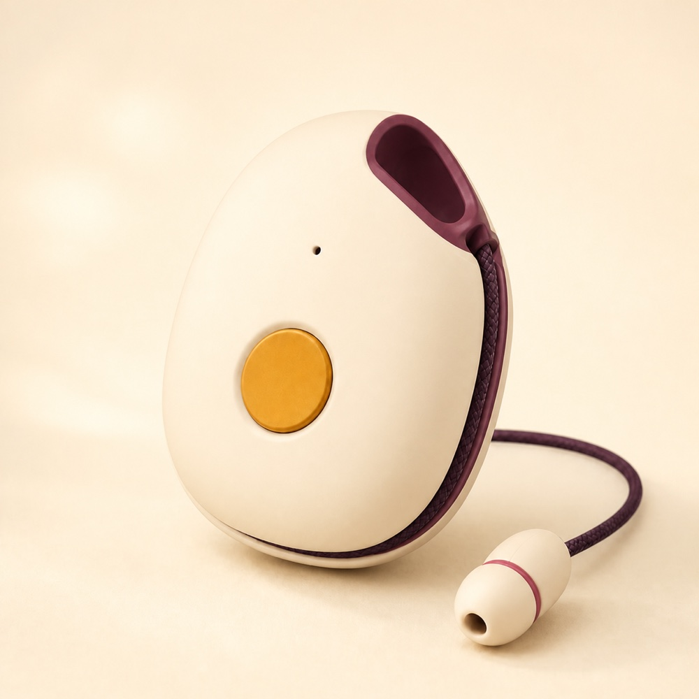
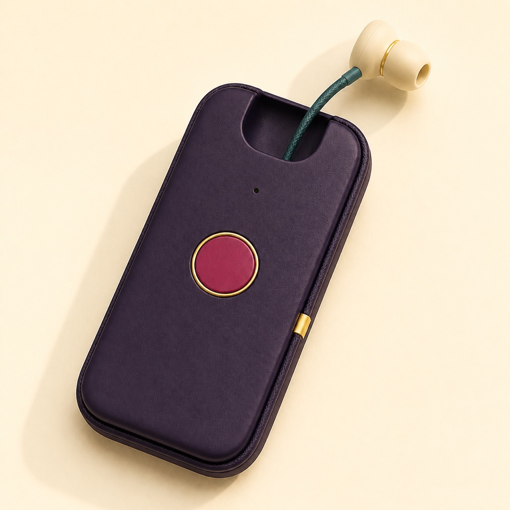
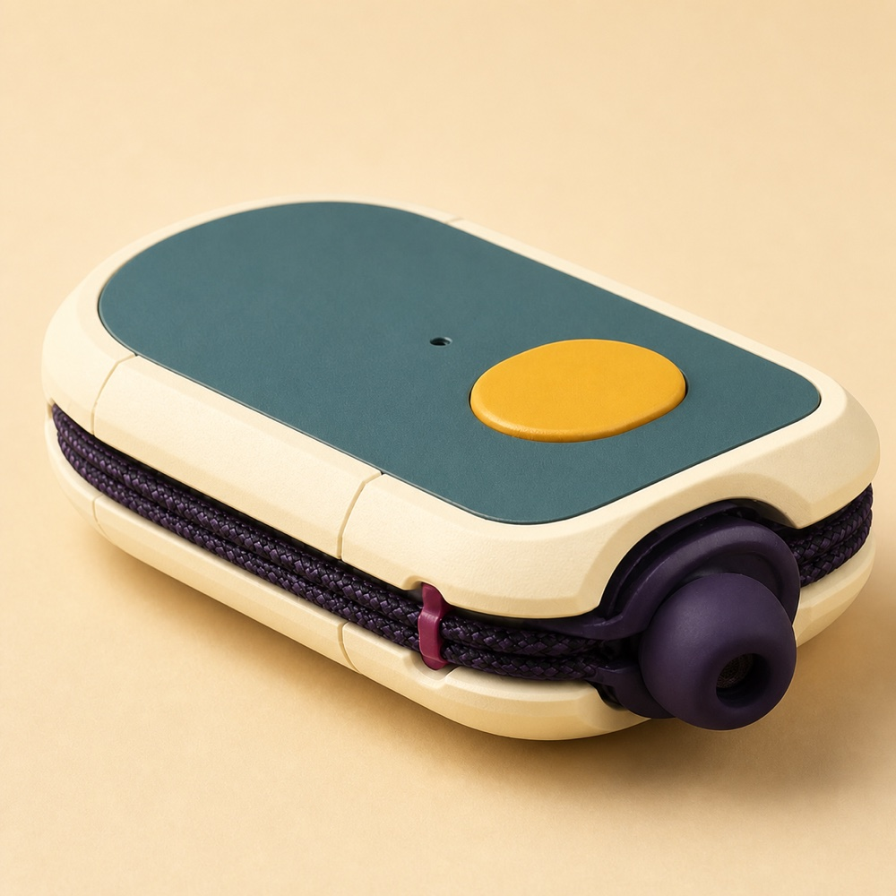
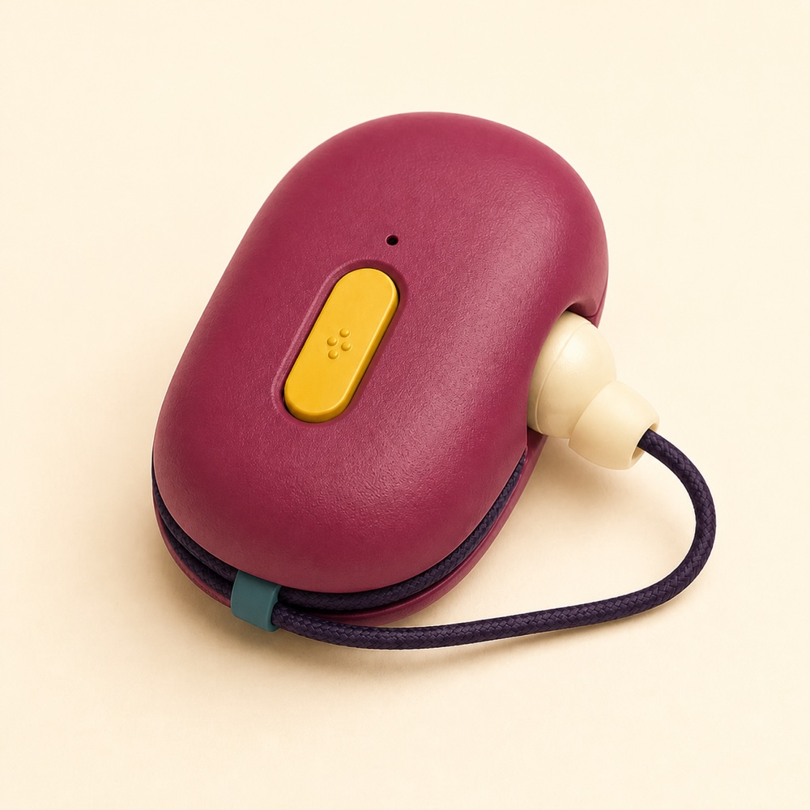

ANA: It's for girls!
Ask. Nurture. Aspire.
Origin Story
Anandana Kapur, a filmmaker and academic in India, and her mother, Professor Kirti Kapur, work together to improve the education for girls in India. ANA began with a conversation between Anandana and Danny Goldfield, her friend and colleague in Cambridge MA. Anandana described an inequality she had observed: When capable technology is scarce, girls have the least access to the best devices in the family. This is an opportunity for us to improve the education for girls.
Guiding question
How do we put a trustworthy thinking companion into the hands of girls, regardless of whether they have internet access?
Guidelines
- Designed first for girls with limited access to technology.
- Personally owned rather than shared with a household or classroom.
- Usable wherever she is with no need for an internet connection.
- Private by design, with local processing, local memory, and one to one audio.
- Intended to build agency, curiosity, judgment, and confidence rather than simply provide answers.
Current stage
Early discovery and prototype definition. The next priority is to validate the problem with educators and girls before locking the product need and design specifications.
Discovery
In some households where capable technology is scarce, the best device may remain with adults. Children may receive older or less capable devices, and girls may have the least access or none at all. If confirmed through field research, then this is another obstacle to education. The opportunity is to give one girl one private, capable, personally owned thinking companion. ANA would be independent of a family phone, free of advertising, and built to keep her work private.
Research Questions
The primary hypothesis is that girls have less control over capable digital devices than adults and boys, creating an additional barrier to educational opportunity.
This must be validated rather than assumed.
Core questions
- What devices exist in the household, and who owns and controls each one?
- Does gender affect access, priority, or privacy?
- What learning activities are difficult or impossible because of device access?
- Would a girl carry ANA every day and consider it hers?
- Which languages, voices, curricula, and cultural choices matter most?
If the needs for ANA is proven, then what is it?
Ownership of thought
The device will belong to one person. Her questions, ideas, notes, and learning remain local unless she deliberately exports them. ANA should help her think rather than train her to defer to technology.
Prototype Brief
Build a pocket sized AI companion that lets a girl ask questions, learn, think, create, and save ideas on a device of her own.
The first prototype should prove the experience, not optimize manufacturing.
Design principles
- Offline first
- Personally owned
- Private by design
- Safe, durable, repairable, and energy efficient
- Simple to use and designed first for girls
Interaction
ANA should be voice first, with one primary push to talk control and a permanently attached, highly durable single earbud. The hard wired earbud is intended to make privacy part of the physical design.
Local AI
The language model, speech recognition, speech output, educational knowledge library, conversations, and notes should remain on the device. No cloud account or remote inference is required for normal use.
Prototype success
A girl can turn ANA on, privately ask questions, learn, create, and save ideas without using another device.
Key product question
Does personally owning a private offline AI companion solve a meaningful educational problem that shared phones, tablets, and classroom hubs do not?
Initial AI generated concepts for the device:



